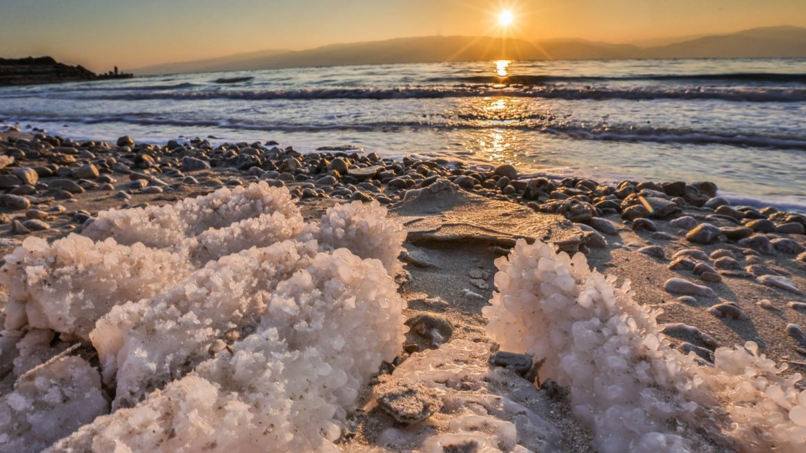
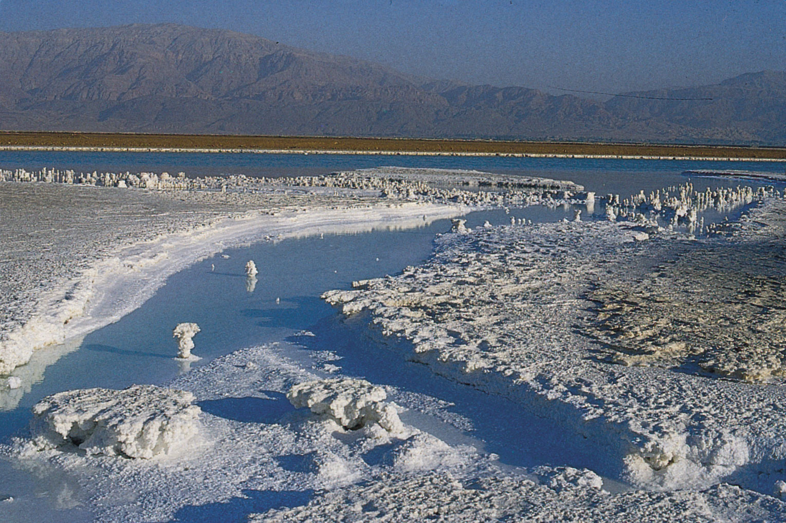

The Dead Sea, Arabic Al-Bar Al-Mayyit ("Sea of Death"), Hebrew Yam HaMela ("Salt Sea"), sometimes known as the Salt Sea, is a landlocked salt lake bordering Israel and Jordan in southwest Asia. Jordan controls that eastern side, while Israel controls the southern portion of the western coast. This same Palestinians West Bank occupies the northern part of the western shore, which has been occupied by Israel since the 1967 Arab-Israeli war. The Jordan River, which supplies the majority of the Dead Sea's water, enters the lake from the north.
The Dead Sea seems to be the lowest body of water on Earth's surface and has the lowest elevation. For several decades in the mid-twentieth century, the conventional number stated for the lake's surface level was around 1,300 feet below sea level. However, beginning in the 1960s, Israel and Jordan began diverting most of the Jordan River's flow and increasing commercial usage of the lake's water. Then as result of these actions, the Dead Sea's water level dropped precipitously. By the mid-2010s, lake level measurements were more than 100 feet below the mid-century value of 1,410 feet below sea level, but the lake continued to decrease by around 3 feet each year.
The water within the Dead Sea is extremely salty, only with concentration of salt rising toward the lake's bottom. This process can result in two different masses of water in the lake for extended periods of time. This situation lasted around three centuries, until the late 1970s. The temperature ranged from 19 to 37 degrees Celsius down to a depth of around 130 feet, the salinity was less than 300 parts per thousand, and the water was notably rich in sulfates and bicarbonates. Water under the transition zone had a steady temperature of roughly 22 °C and a higher degree of salinity, with hydrogen sulfide and large amounts of magnesium, potassium, chlorine, and bromine. Sodium chloride precipitated to the base within the deep water because it was saturated with it. As a result, deep water became petrified (i.e., because it was highly salty and dense, it remained permanently on the bottom).
@ 2022 Silawan, John Kenneth C. | Introduction to Computing Batch 2 | Website Project | Beautiful Wonders of The World | No Copyright Infringement Intended - All rights reserve to the Righful Owners